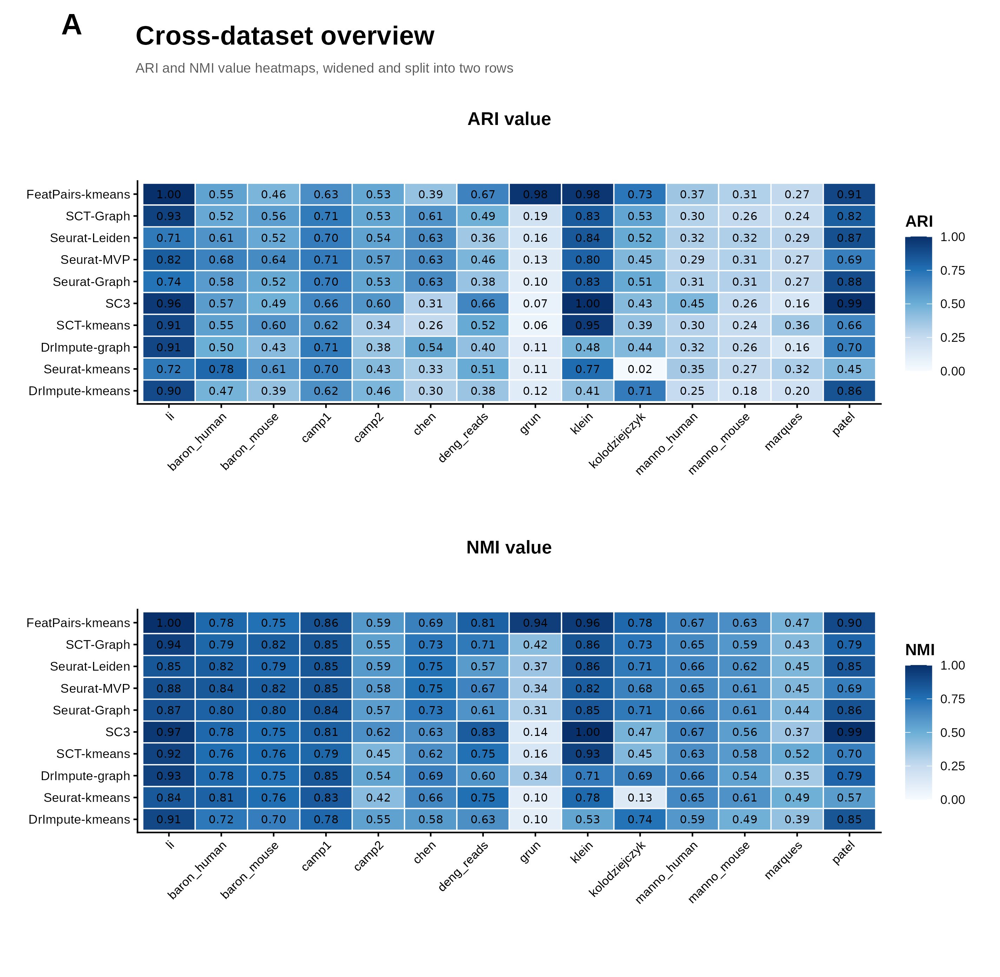
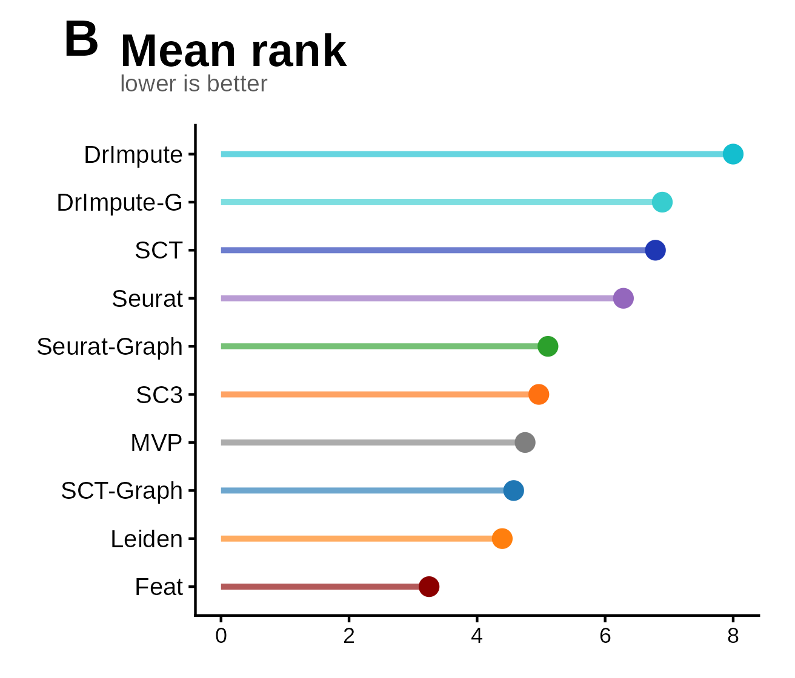
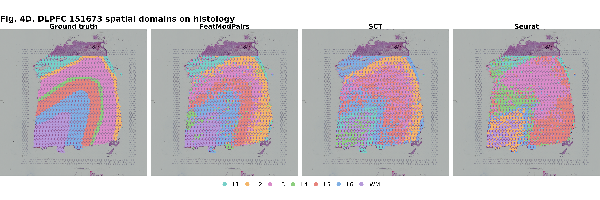
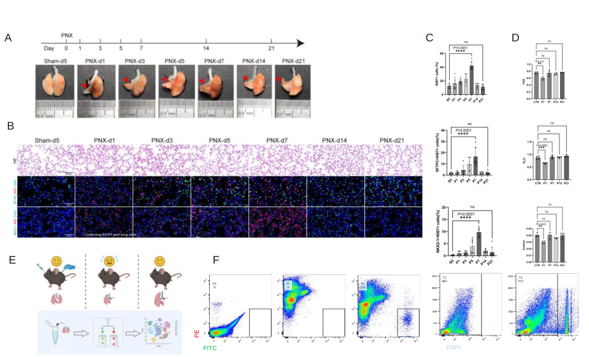

FeatModPairs resource portal
FPMlab
A curated portal for FeatModPairs benchmark datasets, spatial transcriptomics validation, mouse pneumonectomy resources, and candidate genes emerging from the analysis.



FPMlab sections
What FeatModPairs does
The page structure follows what FeatModPairs contributes: stable references, ratio transformation, multi-view extraction, projection stability, trajectory recovery, and biological interpretation.
Stable Reference Modules
Control genes are selected for abundance and low dispersion, then grouped into multiple endogenous modules.
Relative Expression Geometry
Each gene is rewritten as a ratio to module-level counts, reducing raw library-size pull.
Module-wise Feature Learning
LOESS variance modeling and PCA are performed in each reference view before integration.
Embedding-ready Output
The concatenated representation feeds KNN, SNN, UMAP, Leiden, k-means, and Slingshot workflows.
Projection and Spatial Fidelity
Projected labels and physical tissue neighborhoods can be evaluated after nonlinear visualization.
Transition-state Discovery
The method is tuned for nearby states, transition widths, branch continuity, and interpretable pseudotime.
Dataset study cards
Fourteen golden public scRNA-seq benchmark datasets
These gold-standard datasets provide high-quality labels and diverse biological systems for judging whether a feature method can preserve real cell identities. Each card lists the original paper, species, tissue or system, accession, repository, protocol, and source URL.
ARI and NMI heatmaps
The heatmaps compare how closely each method recovers the known cell labels in every golden dataset. ARI and NMI reward agreement with curated annotations while making differences between datasets easy to scan.
Mean-rank summary
The rank panel compresses performance across datasets and metrics. Lower mean rank indicates a method that stays competitive across multiple tissues, species, and sequencing protocols rather than winning only one narrow case.
Comparison method papers
Source papers behind the benchmark methods
Graph variants in the benchmark use the corresponding Seurat or SCTransform representations before graph clustering.
Trajectory source records
Twenty dynverse gold-standard trajectory tasks
Each task links to the dynverse Zenodo record and its dataset file, with cells, genes, milestones, and benchmark article information.
Spatial transcriptomics validation
DLPFC 151673 brain slice dataset
This section highlights the spatial validation dataset used to test whether FeatModPairs preserves physical tissue-domain structure in a Visium brain section.
Mouse lung pneumonectomy dataset
Mouse lung resection workflow resource
This section follows the main mouse pneumonectomy study: experiment design and validation, with downstream candidate genes summarized as an interactive bubble skeleton.
Pneumonectomy model
Unilateral left pneumonectomy with sham operation controls and postoperative time-series sampling.
Tissue and function readouts
H&E, immunofluorescence, panoramic lobe imaging, KI67/SFTPC/Nkx2-1 quantification, and pulmonary function.
Single-cell sequencing
Whole-lung and AT2-enriched cell fractions were profiled to build a regeneration atlas.
FeatModPairs embedding
The method resolved major lung populations, sample shifts, silhouette structure, and downstream state programs.
Epithelial repair axis
AT2-core, Krt8-positive bridge-transition, and AT1-core regions were connected by pseudotime.
Myeloid remodeling axis
Mono-core, remodeling-transition, and macrophage-rich states formed an ordered immune continuum.
Candidate gene map
Bubble skeleton of newly highlighted genes
Each bubble opens a separate gene page with known function, related literature context, and the potential role suggested by the FeatModPairs mouse PNX analysis.
Files to connect
Feat package preview
Formal release links are intentionally hidden for now.